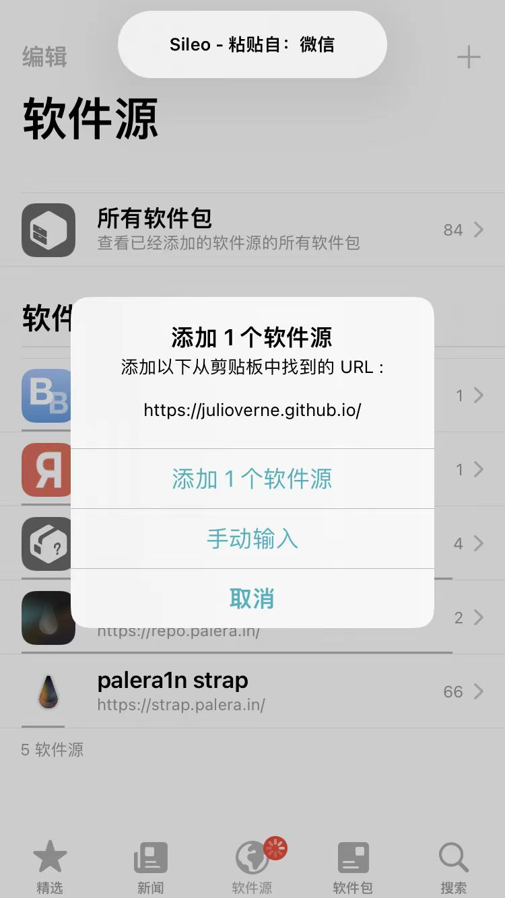
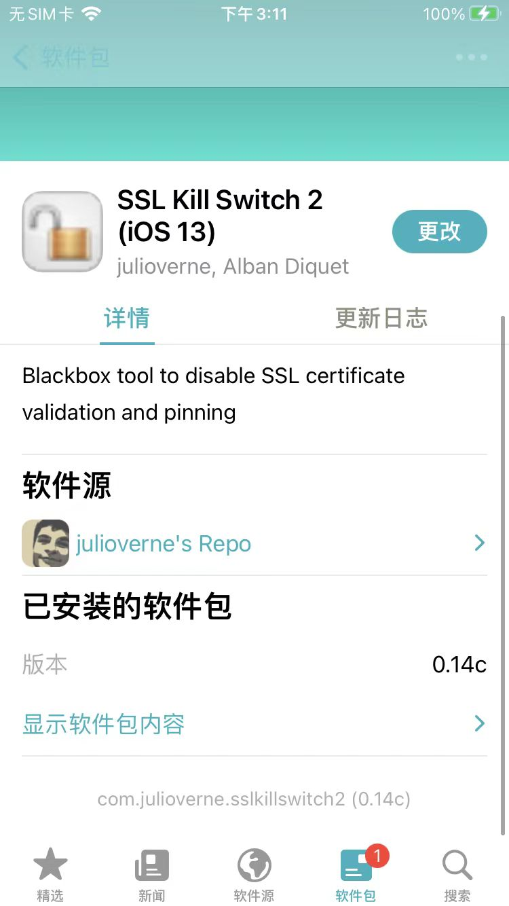
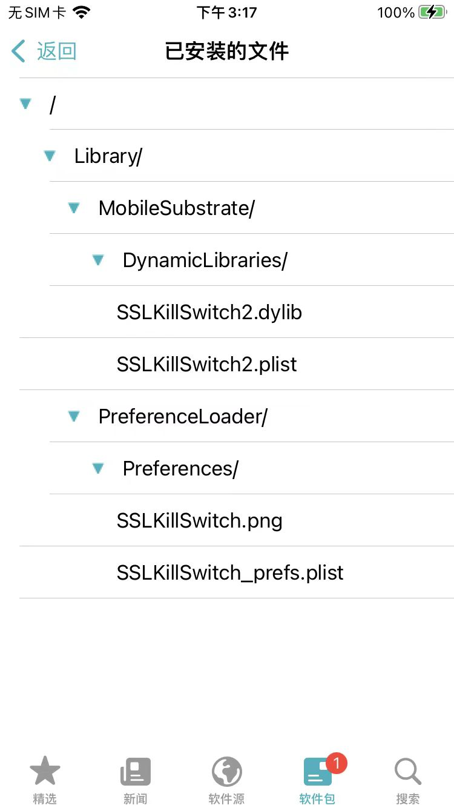
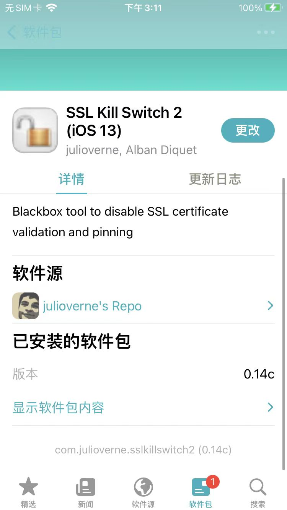
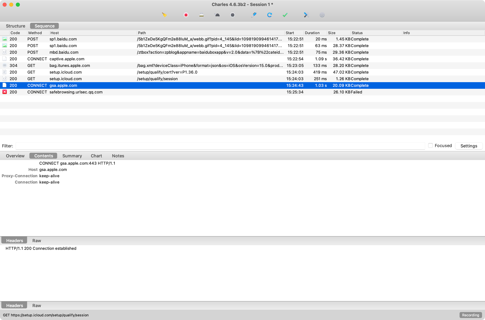

SSL Kill Switch
记得是有多个版本：
SSL Kill Switch 2ssl-kill-switch3
抓包举例
SSL Kill Switch 2 (iOS 13)
Apple账号
经测试，Apple账号登录过程中的https请求：
- 除了特殊的，特定的：
- 之外，其他普通的（包括带账号绑定的https请求），是可以抓包的，能看到明文的
具体步骤：
- 手机
- iPhone8:
iOS 15.1、palera1n的rootful越狱
- iPhone8:
- Sileo中安装插件
julioverne的SSL Kill Switch 2 (iOS 13)- 源地址：https://julioverne.github.io
- 
- 插件安装后效果
com.julioverne.sslkillswitch2(0.14c)- 
- 已安装文件
- 
- 已安装文件
- 
- 源地址：https://julioverne.github.io
https抓包效果：
- 能抓包明文的
无法抓包的
-

https://gsa.apple.com 200 CONNECT gsa.apple.com Tue Jul 04 15:24:43 CST 2023 1031 20568 Complete
-